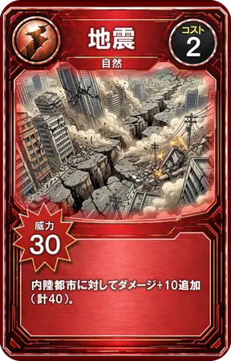
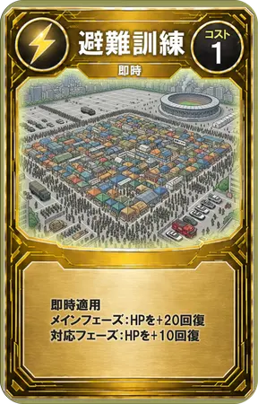
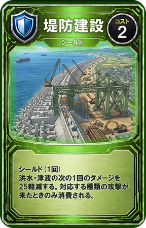
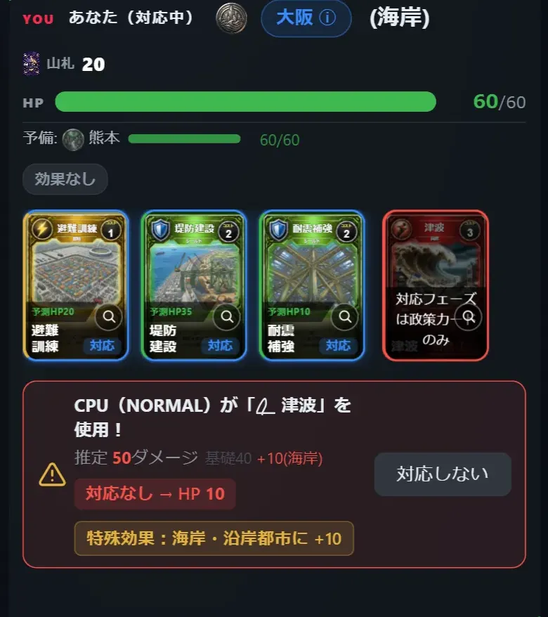
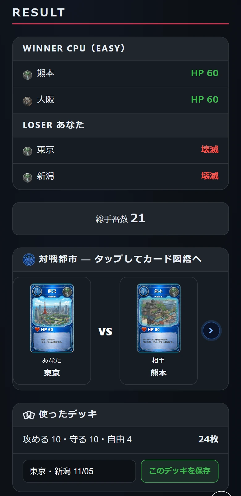
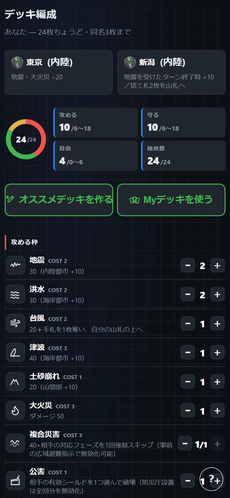

ABOUT
失敗できる災害はここだけ
知っている
READY OR NOT動ける
本番は一度きり
知っている動ける
防災教育のゴールは「動ける」
防災教育で育てたいのは、知識だけでなく、状況に応じて判断し、行動を選べる力です。災害のときに必要なのは、覚えたことを思い出す力より、その場で選ぶ力です。
今ある学び方と、まだ届いていないところ
Ready or Not
選ぶ・結果・やり直しが、数分で回る
なぜ、そこが空いているのか
人は、試して、結果を見て、直すことで上達します。けれど現実の防災では、判断の結果が分かるのは災害が来たときだけで、そのときにはやり直せません。だから「試す→結果→直す」の輪が、一人ひとりの中で一度も回らないのです。
試す？直す

選ぶ結果直す


Ready or Not がすること
この輪を、ゲームの中で回せるようにすること。それが Ready or Not の役割です。プレイヤーは街を守る役になり、限られた予算で備えを選びます。災害が来ると、その選択の結果が数分で返ってきます。失敗しても、何度でもやり直せます。
防災の知識そのものを教えることは、教科書や講義にお任せします。Ready or Not は、知っていることを判断と行動につなげる練習の場です。ほかの教材と組み合わせて使ってください。



約束しないこと
ゲームなので、現実を単純化している部分があります。「これだけで防災が学べる」とは考えていません。興味を持つきっかけと、判断を練習する場であることを目指しています。
つくっている人
Ready or Lab（大学生のチーム）がつくっています。授業・研修での利用や、取材のご相談はお問い合わせからどうぞ。
PLAY